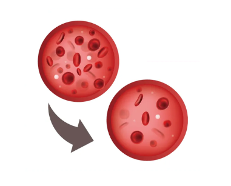
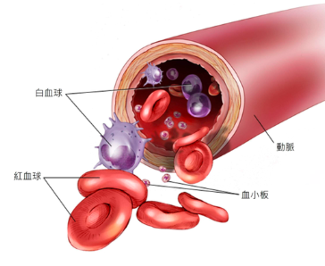
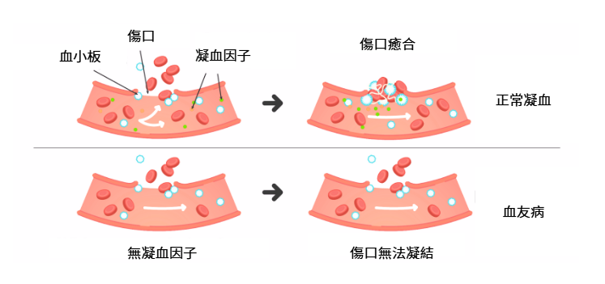
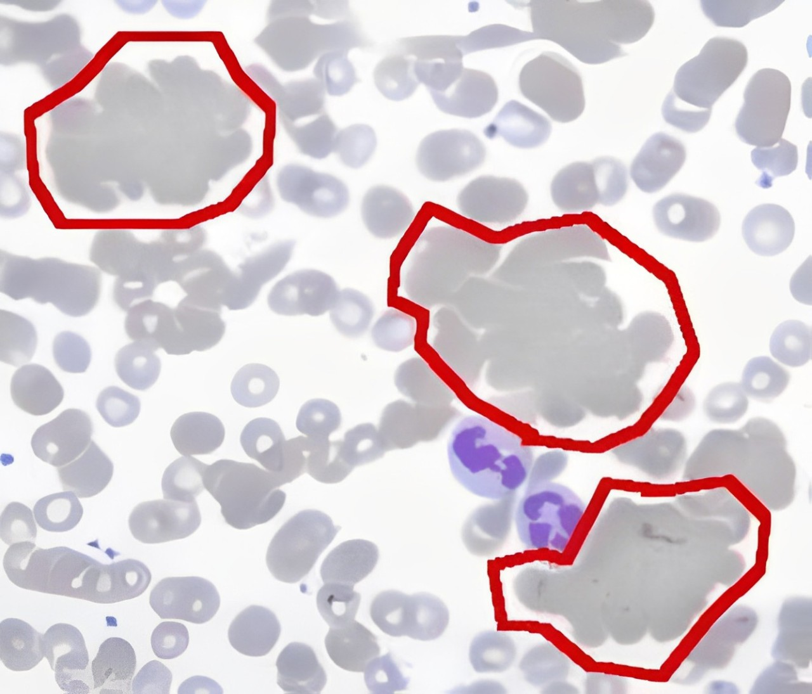
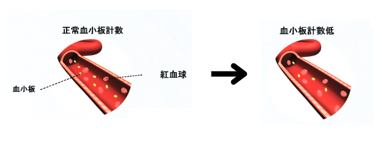

介紹
人體內一種重要的液體組織，負責運輸氧氣、營養物質、廢物等至全身，並參與免疫防禦、體溫調節和酸鹼平衡的維持。它不僅是循環系統的核心，也是多種生理過程的基礎。
貧血（Anemia）
-
指血液中的紅血球或血紅蛋白數量低於正常水平，導致血液無法有效運送足夠的氧氣到身體各個器官。
-
病因:
1.缺鐵性貧血：由於缺乏鐵質，無法製造足夠的血紅蛋白。 2.維他命B12或葉酸缺乏：會影響紅血球生成。 3.慢性病貧血：由於慢性疾病（如腎病、風濕病等）造成的紅血球生成異常。 4.溶血性貧血：紅血球破壞過快。
- 症狀：
1.蒼白的皮膚或黏膜 2.呼吸急促 3.心悸 4.頭暈- 預防：
1.均衡飲食，確保足夠的鐵、維他命B12、葉酸。 2.定期檢查，特別是對有貧血家族史的人群。- 治療：
1.補充缺乏的營養素（如鐵劑、維他命B12或葉酸）。 2.嚴重情況下需要輸血或治療根本原因（如治療腎病等）。白血病（Leukemia）
-
是一種血液和骨髓中的癌症，會導致異常的白血球增生。根據發病速度可分為急性和慢性兩類。
- 病因:
1.遺傳因素：某些遺傳疾病（如唐氏綜合症）增加白血病風險。 2.環境因素：長期接觸某些化學物質（如苯）、放射線等。 3.病毒感染：如人類T細胞白血病病毒（HTLV-1）。
- 症狀:
1.持續疲倦、虛弱 2.發燒、出汗 3.體重減輕 4.淋巴結腫大 5.出血或瘀傷 6.骨痛
- 預防：
1.減少接觸致癌物質，如避免長期接觸化學品和放射線。 2.定期健康檢查，尤其是有家族病史的人。
- 治療：
1.化療：主要治療手段，使用藥物殺死癌細胞。 2.骨髓移植：對某些患者有效。 3.靶向治療和免疫療法：針對特定的癌細胞進行治療。
血友病（Hemophilia）
-
是一種由遺傳引起的出血性疾病，患者缺乏一種或多種凝血因子，導致血液無法正常凝固。
- 病因:
1.血友病A：由於缺乏凝血因子VIII。 2.血友病B：由於缺乏凝血因子IX。 3.通常是遺傳自母親（X染色體隱性遺傳）。
- 症狀:
1.過度出血或淤血 2.關節腫脹和疼痛（由內部出血引起） 3.牙齦、鼻血或皮膚輕微碰撞後出血 4.內部出血（例如肌肉、關節）
- 預防：
1.目前無法完全預防血友病，但可以進行基因篩查，發現遺傳風險。 2.避免劇烈運動和外傷。
- 治療：
1.凝血因子補充療法：定期輸入缺失的凝血因子來防止出血。 2.急性出血事件時，及時使用凝血因子來控制出血。
溶血性貧血（Hemolytic Anemia）
-
指紅血球被過早破壞，破壞速度超過骨髓生成紅血球的速度，導致血液中紅血球數量不足。
-
病因:
1.自體免疫性溶血性貧血：免疫系統錯誤地攻擊自體紅血球。 2.遺傳性疾病：如地中海貧血（鐮形紅血球病）。 3.感染或藥物反應：某些藥物或感染可能引發紅血球破壞。
- 症狀：
1.疲勞、虛弱 2.黃疸（皮膚和眼睛發黃） 3.高發燒 4.迅速心跳 5.脾臟腫大- 預防：
1.早期診斷和治療自體免疫疾病。 2.避免引發紅血球破壞的藥物或感染。- 治療：
1.類固醇藥物：減少免疫系統對紅血球的攻擊。 2.輸血：在急性情況下補充紅血球。 3.脾臟切除術：對某些自體免疫性溶血性貧血有幫助。血小板減少症（Thrombocytopenia）
-
指血液中血小板數量低於正常水平，導致凝血功能受損，容易出現出血或瘀傷。
- 病因:
1.免疫性血小板減少症（ITP）：免疫系統錯誤攻擊血小板。 2.藥物引起的血小板減少：某些藥物可能抑制血小板生成。 3.骨髓疾病：如白血病或其他骨髓病變。
- 症狀:
1.易瘀傷 2.鼻血、牙齦出血 3.血尿、血便 4.小型出血點（如皮膚上的紫斑）
- 預防：
1.減少外傷風險。 2.對於有免疫性血小板減少症患者，避免使用會抑制免疫系統的藥物。
- 治療：
1.類固醇藥物：抑制免疫反應，增加血小板數量。 2.免疫球蛋白療法：提高血小板數量。 3.脾臟切除：對部分ITP患者有效。
- 症狀：
- 症狀：